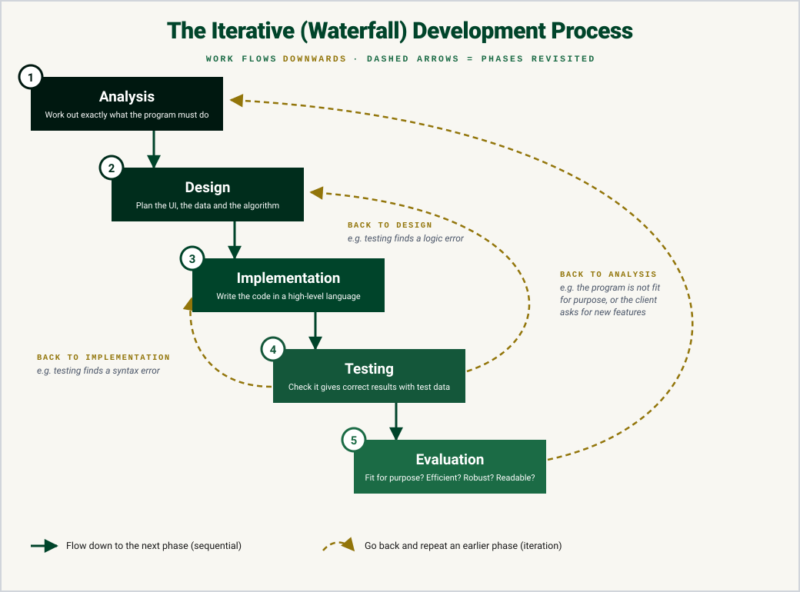
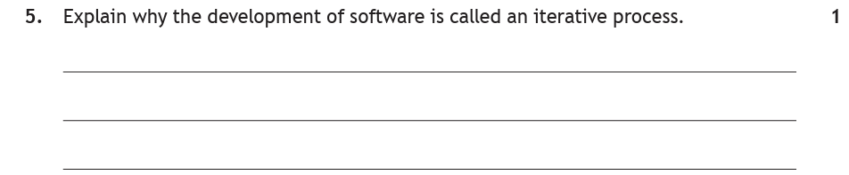
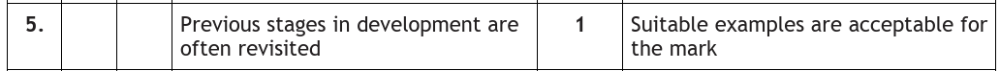
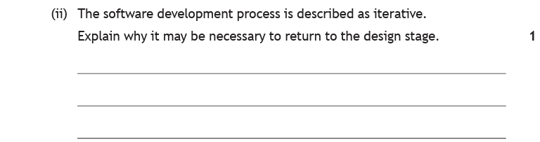
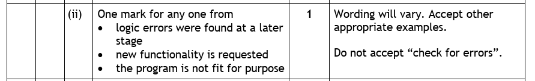

Introduction
Modern computer software is very complex — it is often worked on by teams of people who can write millions of lines of code between them! Even a small project raises tricky questions. What exactly should the program do? How should it look? How will its logic work? And how do we know when it's finished?
To answer these questions without everything descending into chaos, programming teams work through a set of steps called the software development process. Working through the phases in a structured way helps teams reduce errors and stay organised.
Key Terms
The Development Phases
There are five phases, and they always come in the same order. Here's what actually happens in each one:
| Phase | What happens |
|---|---|
| Analysis | A systems analyst meets the client to work out exactly what the program is required to do — its overall purpose, and its functional requirements (the inputs, processes and outputs it needs). |
| Design | Planning the solution before any code is written: what the user interface will look like, what data will be stored, and how the program will work (the algorithm, planned using a design technique). |
| Implementation | A programmer (or a team of programmers) writes the actual code, following the designs, in a high-level language such as Python. |
| Testing | Checking the program works as expected — that it doesn't crash, and that it gives correct results. This is done with carefully chosen test data. |
| Evaluation | Stepping back and judging the finished program: is it fit for purpose? Does it make efficient use of coding constructs? Is it robust and readable? |
Notice how each phase feeds the next. You can't design a solution until you know what the problem is (analysis). You can't write the code until you have a design to follow. And you can't test a program that doesn't exist yet. The order matters!
The Iterative/Waterfall Model
Because each phase flows down into the next, the process is often drawn as a staircase of steps, with the work "flowing" from one phase down to the next like a waterfall. This is the iterative/waterfall model of software development.

In a perfect world, a team would do each phase once, finish it, and never look back. But software development doesn't work like that — and that's where the iterative part comes in.
Why Is It Iterative?
Iteration means repeating a process. In software development, it describes going back to phases that have already been "finished".
Why would a team need to do that? Because things change, and problems get discovered:
- Testing finds an error — the team goes back to the design and implementation phases to fix it, then tests again.
- The client changes their mind — new requirements appear, so the team revisits analysis and everything that follows from it.
- The evaluation shows the program isn't fit for purpose — back round the loop we go.
For example: the design for part of a program is created and implemented. Errors found during testing mean parts of the design and implementation have to change, and then further testing is carried out. The phases have been revisited — that's iteration.
You'll go through a basic version of this process yourself in the coursework assignment: you'll analyse a problem, design a solution, implement it, test it — and when a test fails (it happens to everyone), you'll loop back, fix your code, and test again. That is iterative development.
Here are two past paper questions on exactly this idea — read the question, think about your answer, then check it against the real marking instructions.

How to tackle it: The command word is explain, so a one-word answer won't do. We need to say what iteration actually means in the development process. So we need to fit "previous stages/phases are often revisited (repeated)" into our answer.
- Don't just write "it repeats" — say what repeats. The stages of development are returned to.
- Adding a quick example is a safe way to make your explanation clear, e.g. "returning to design and implementation after testing finds an error".

Notice the marking instructions accept a suitable example for the mark too — so if you blank on the wording, describing a concrete loop-back (testing → design) can still score.
An example would be:
The development process is iterative as you can return to previous stages if errors are identified. For example, errors are found in testing and you return to design to fix them.

How to tackle it: This one is more specific. It names the design stage and asks why you'd go back to it. So the general "stages are revisited" line isn't enough here, you must give a reason the design would need to change. Any one of these earns the mark:
- Logic errors were found at a later stage — the program runs but gives wrong results, so the algorithm design itself must be fixed.
- New functionality is requested — the client wants something extra, so it has to be designed before it can be coded.
- The program is not fit for purpose — evaluation shows it doesn't do what was required.

Watch the trap: "Do not accept 'check for errors'". Checking for errors is what testing does — you return to design because a problem has already been found and the plan needs to change. Make sure your answer gives a cause, not an activity.
Practice Questions
The software development process is described as iterative. Explain what this means.
Marking Instructions
Stages/phases of development that have already been completed are revisited (repeated) (1 mark). A suitable example is also acceptable, e.g. returning to design and implementation after testing finds an error.
During testing, a quiz program keeps awarding the wrong scores. Explain why the development team may need to return to the design stage.
Marking Instructions
A logic error has been found at a later stage — the planned algorithm is wrong, so the design must be changed before the code can be fixed (1 mark). Do not accept "to check for errors".
State the phase of the development process in which each of the following takes place:
(a) The program is checked using carefully chosen test data.
(b) The functional requirements (inputs, processes and outputs) are identified.
Marking Instructions
(a) Testing (1 mark) (b) Analysis (1 mark)
Describe two tasks carried out during the design phase of the software development process.
Marking Instructions
Any two of (1 mark each): design the user interface; identify the data to be stored/used; plan the algorithm/logic of the program using a design technique (e.g. pseudocode, structure diagram, flowchart).
A finished program is shown to the client, who asks for an extra feature to be added. State which phase the development team should return to first, and explain why this situation shows that development is iterative.
Marking Instructions
Analysis — the new requirement must be agreed/added to the requirements first (1 mark). It shows iteration because phases that were already completed are being revisited/the team goes back through design, implementation and testing again for the new feature (1 mark).